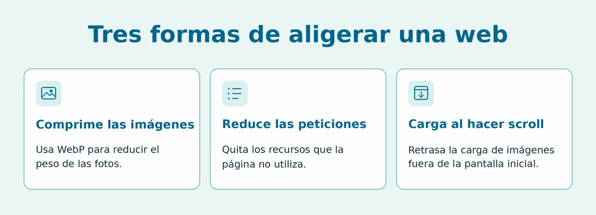
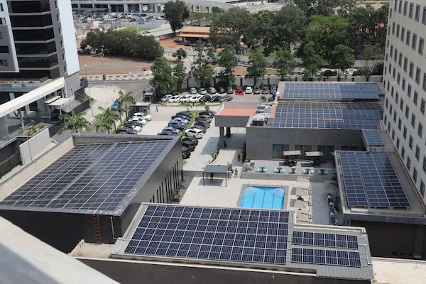
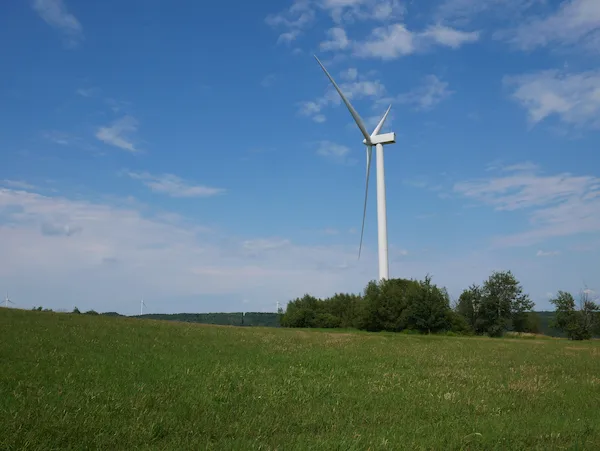

Cómo reducir la huella de carbono de tu web
Autor: Ana Ruiz · · 6 min de lectura

Una web más ligera consume menos energía en servidores, redes y dispositivos, y además carga más rápido para todas las personas.
Por qué importa
Cada página que cargamos tiene un coste energético que se multiplica por miles de visitas. Optimizar imágenes, reducir scripts y elegir un alojamiento eficiente son decisiones pequeñas con un efecto acumulado muy grande.

Pasos para empezar
Empieza midiendo: sin datos es difícil priorizar. Después, aplica cambios de bajo esfuerzo y vuelve a medir para comprobar el resultado.
Galería
-
Energía solar -

Energía eólica